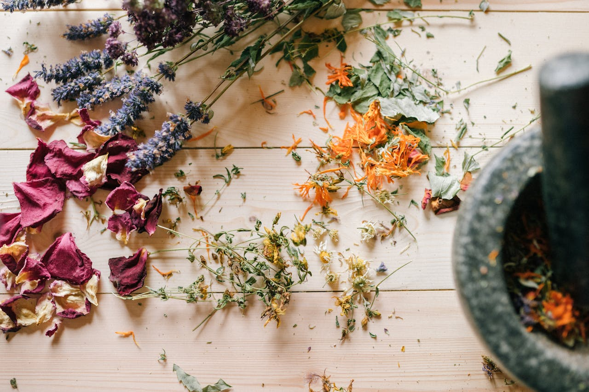
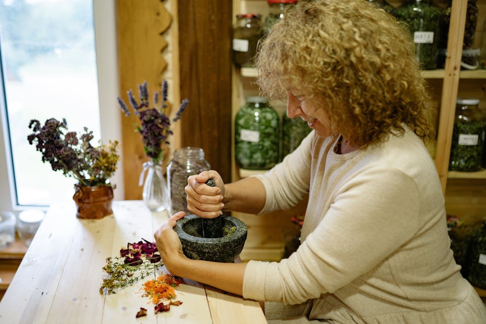

Como escolher a planta e a parte vegetal certa
Aprenda a selecionar a planta ideal e a parte vegetal correta para obter compostos ativos e propriedades cosméticas específicas.
Aprenda a selecionar a planta ideal e a parte vegetal correta para obter compostos ativos e propriedades cosméticas específicas.
Escolha o método de extração mais adequado para obter os compostos desejados. Cada técnica, quando aplicada corretamente, garante extratos botânicos mais estáveis, eficazes e seguros para a cosmética natural.
A conservação é essencial para manter a qualidade dos extratos botânicos. Escolher o conservante adequado e garantir um bom acondicionamento aumenta a estabilidade e a segurança do extrato para uso cosmético.
A utilização de extratos botânicos nas formulações deve ter um objetivo claro. É essencial analisar as propriedades de cada extrato e respeitar as concentrações ideais para garantir eficácia e segurança nos cosméticos naturais.

